TC-01
BR-05
Live GPU
✅ ผ่าน (PASS)
รับไฟล์ขนาด 14.9 MB และ 15.0 MB พอดี
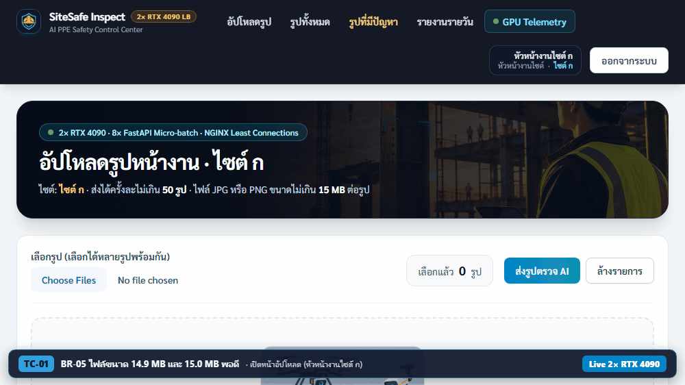
หลักฐานการทดสอบครบทั้ง 27 Test Cases (24 Core TCs บน 2× RTX 4090 จริง + 3 Bug Hunt TCs ในโหมด BUG_MODE=1) พร้อมวิดีโอ .gif ทุกข้อ · คลิกที่ภาพเพื่อขยายเต็มจอ
| TC ID | ชื่อ Test Case | กติกา | โหมด | ผลที่คาดหวัง | ผลจริง | สถานะ | วิดีโอ |
|---|---|---|---|---|---|---|---|
| TC-01 | รับไฟล์ขนาด 14.9 MB และ 15.0 MB พอดี | BR-05 | Live GPU | HTTP 201 ทั้งสองไฟล์ | HTTP 201, 201 |
✅ ผ่าน (PASS) | ดู GIF (128 KB) |
| TC-02 | ปฏิเสธไฟล์เกิน 15 MB (+1 B และ 15.1 MB) | BR-05 | Live GPU | HTTP 413 ทั้งสองไฟล์พร้อมข้อความ 15 MB | HTTP 413, 413 |
✅ ผ่าน (PASS) | ดู GIF (104 KB) |
| TC-03 | รับเฉพาะ JPG และ PNG แท้ (ตรวจ Magic Bytes) | FR-02 | Live GPU | รับ 2/2 ไฟล์ผ่าน UI และเก็บลง Volume | รับครบ 2/2 (JPG + PNG) |
✅ ผ่าน (PASS) | ดู GIF (127 KB) |
| TC-04 | ปฏิเสธ GIF, PDF และไฟล์ text ปลอมนามสกุล .jpg | FR-02 | Live GPU | HTTP 415 ทุกไฟล์ | HTTP 415, 415, 415 |
✅ ผ่าน (PASS) | ดู GIF (109 KB) |
| TC-05 | ขอบเขตจำนวนรูปต่อครั้ง (0, 50, 51 รูป) | BR-06 | Live GPU | 0→422 · 50→201 · 51→422 | 422 · 201 · 422 |
✅ ผ่าน (PASS) | ดู GIF (108 KB) |
| TC-06 | หน้า /upload ผูกไซต์ตามบัญชีหัวหน้างานอัตโนมัติ | FR-04 | Live GPU | แสดง SITE-A และไม่มี select เปลี่ยนไซต์ | SITE-A · select=0 |
✅ ผ่าน (PASS) | ดู GIF (110 KB) |
| TC-07 | Decision Table ครบ 8 กรณี R-1..R-8 (รวม H=0, V=2) | BR-01..03 | Mock | 8/8 ตรงตารางตัดสิน (R-5 = FAIL) | 8/8 ตรงครบทุกกรณี |
✅ ผ่าน (PASS) | ดู GIF (70 KB) |
| TC-08 | หน้า PhotoDetail วาดกรอบ Bounding Boxes ครบตาม H+V | FR-07, FR-08 | Mock | H=1, V=1, 2 กรอบ SVG, ผล FAIL | H=1, V=1, 2 กรอบ, FAIL |
✅ ผ่าน (PASS) | ดู GIF (94 KB) |
| TC-09 | Live 2× RTX 4090 YOLO11s ตรวจภาพหน้างานจริง 6 รูป + วาดกรอบ | FR-07, NFR-01 | Live GPU | 6/6 DONE พร้อมกรอบ PPE และ GPU telemetry | 6/6 DONE (gpu0-8103, model=26.38ms) |
✅ ผ่าน (PASS) | ดู GIF (158 KB) |
| TC-10 | หน้า /photos/problems แสดงเฉพาะรูป FAIL และ WARN | FR-11 | Live GPU | รวม 31 (FAIL=20, WARN=11) | รวม 31 (FAIL=20, WARN=11) |
✅ ผ่าน (PASS) | ดู GIF (59 KB) |
| TC-11 | หน้า /photos กรองตามวันที่ ไซต์ และผลตรวจ (WARN) | FR-12 | Live GPU | กรอง WARN ไซต์ ก = 11 รูป | photos-total-count = 11 |
✅ ผ่าน (PASS) | ดู GIF (52 KB) |
| TC-12 | API /api/photos/{id} คืนกรอบ PPE และ GPU Telemetry ครบ | FR-07 | Live GPU | มี detections[], lb_upstream, lb_server, lb_model_ms | gpu0-8102 (127.0.0.1:8102) |
✅ ผ่าน (PASS) | ดู GIF (99 KB) |
| TC-13 | ปิดหน้าเบราว์เซอร์กลางทาง 10 รูปยังตรวจจบครบ 10/10 | FR-05, NFR-04 | Live GPU | done=10, failed=0 หลังปิดหน้าจอ | done=10, failed=0 |
✅ ผ่าน (PASS) | ดู GIF (52 KB) |
| TC-14 | ไฟล์ใหญ่ 14.9 MB และ 15.0 MB ตรวจจบครบผ่าน NGINX | BR-05, NFR-04 | Live GPU | done=2, failed=0 ไม่หลุด timeout | done=2 ใน 2.5 วินาที |
✅ ผ่าน (PASS) | ดู GIF (52 KB) |
| TC-15 | ไฟล์เสีย corrupt_half.jpg จบ FAILED โดยไม่ขวางภาพปกติ | FR-06, NFR-04 | Live GPU | corrupt=FAILED, ปกติ=DONE 2/2 | done=2, failed=1 (เปิดไฟล์รูปไม่ได้) |
✅ ผ่าน (PASS) | ดู GIF (63 KB) |
| TC-16 | ส่ง 20 รูปพร้อมกัน p95 ≤ 30 วิ และกระจายข้ามทั้ง 2× RTX 4090 | NFR-02, NFR-03 | Live GPU | 20/20 DONE, p95 ≤ 30s, gpu0 > 0 & gpu1 > 0 | 20/20 ใน 2.69s · p95=2.23s · gpu0=7, gpu1=13 |
✅ ผ่าน (PASS) | ดู GIF (139 KB) |
| TC-17 | GET /api/health รายงาน db, storage, dispatcher, gateway = ok | NFR-04 | Live GPU | status=ok ทุกบริการ · ai_mode=real | status=ok, db=ok, dispatcher=ok, gateway=ok |
✅ ผ่าน (PASS) | ดู GIF (38 KB) |
| TC-18 | BR-04 เส้นแบ่งสีแดง 89.67% แดง · 90.00% และ 90.33% ปกติ | BR-04 | Live GPU | SITE-A แดง · SITE-B/C ปกติ | 89.67%(แดง) · 90.00%(ปกติ) · 90.33%(ปกติ) |
✅ ผ่าน (PASS) | ดู GIF (62 KB) |
| TC-19 | ขอบเขตพิเศษรายงาน (ไม่มีข้อมูล / 9÷10 / ตัด FAILED ออก) | FR-15, BR-04 | Live GPU | ไม่มีข้อมูล · 90.00% · 100.00% (ไม่แดง) | ตรงครบทั้ง 3 ไซต์ |
✅ ผ่าน (PASS) | ดู GIF (62 KB) |
| TC-20 | BR-07 ป้ายความพร้อมรายงาน 17:59 น. vs 18:00 น. | BR-07 | Live GPU | 17:59→ระหว่างวัน · 18:00→พร้อมแล้ว | data-ready=false → true ตรงเวลา |
✅ ผ่าน (PASS) | ดู GIF (50 KB) |
| TC-21 | แก้ผล FAIL → PASS เปลี่ยนไซต์ ก จาก 89.67% (แดง) เป็น 90.00% (ปกติ) | FR-13, FR-14, NFR-07 | Live GPU | คง model_result=FAIL, รายงานเป็น 90.00% ไม่แดง | 90.00% ไม่แดง · edited=1 |
✅ ผ่าน (PASS) | ดู GIF (123 KB) |
| TC-22 | ปฏิเสธเหตุผลว่าง (422) + Audit History + ปุ่มเลื่อนวันรายงาน | FR-13, FR-16 | Live GPU | ว่าง→422 · มีเหตุผล→201 · เลื่อนวันได้ | 422 · 201 · 2026-11-17→16 |
✅ ผ่าน (PASS) | ดู GIF (71 KB) |
| TC-23 | แยกสิทธิ์ RBAC ครบ 3 บทบาท (401/403/404) + UI Login | FR-18..22, NFR-06 | Live GPU | ไม่ล็อกอิน→401 · ข้ามไซต์→404 · เกินสิทธิ์→403 | 401 · 404 · 403 · UI Executive ซ่อนเมนูครบ |
✅ ผ่าน (PASS) | ดู GIF (92 KB) |
| TC-24 | แดชบอร์ด /telemetry ONLINE (2× RTX 4090) + ไม่รั่ว API Key | NFR-05 | Live GPU | ONLINE · ครบ 4 รูปแบบ · 0 API Key ใน HTML/API | ONLINE (gpu0-8103) · 3/3 บทบาทเข้าได้ · 0 รั่วไหล |
✅ ผ่าน (PASS) | ดู GIF (107 KB) |
| TC-25 | Bug Hunt #1 (BR-02): จับบัก H=0, V=2 ได้ WARN แทน FAIL | BR-02 | Mock (BUG_MODE=1) | ตรวจพบบัก: ระบบตอบ WARN แทน FAIL | จับได้! h0_v2.jpg ตอบ WARN แทน FAIL |
🐛 จับบักได้ (BUG_MODE=1) | ดู GIF (103 KB) |
| TC-26 | Bug Hunt #2 (BR-04): จับบักอัตราผ่าน 90.00% พอดีเป็นสีแดง | BR-04 | Mock (BUG_MODE=1) | ตรวจพบบัก: SITE-B 90.00% แสดงสีแดง | จับได้! SITE-B 90.00% ได้ red=true |
🐛 จับบักได้ (BUG_MODE=1) | ดู GIF (63 KB) |
| TC-27 | Bug Hunt #3 (BR-06): จับบักเปิดชุด 51 รูปแล้วรับ 201 แทน 422 | BR-06 | Mock (BUG_MODE=1) | ตรวจพบบัก: count=51 ตอบ HTTP 201 | จับได้! count=51 ตอบ HTTP 201 |
🐛 จับบักได้ (BUG_MODE=1) | ดู GIF (112 KB) |



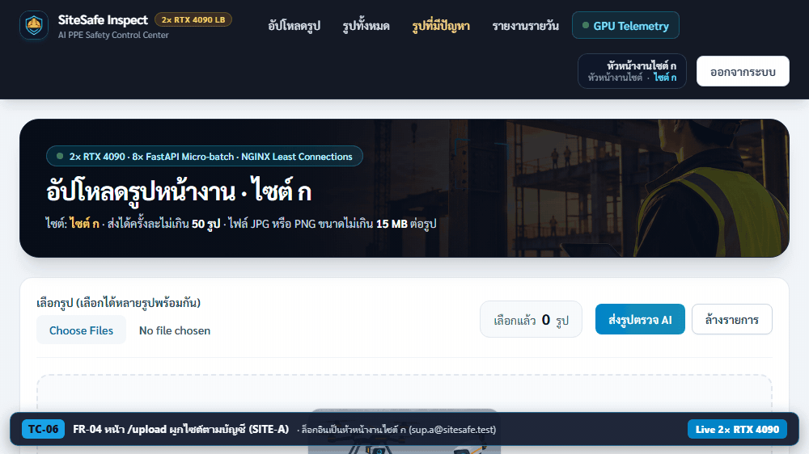

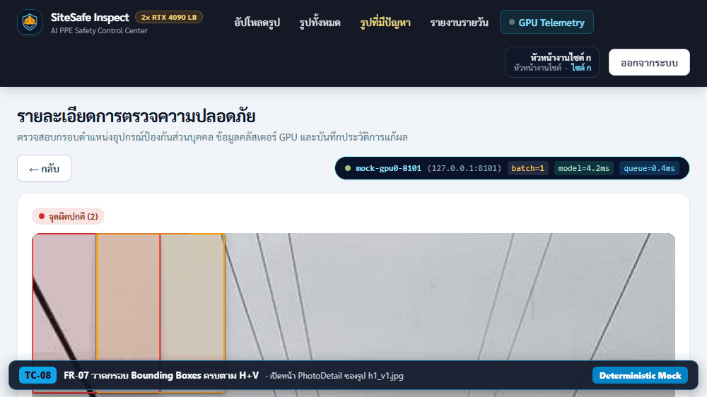
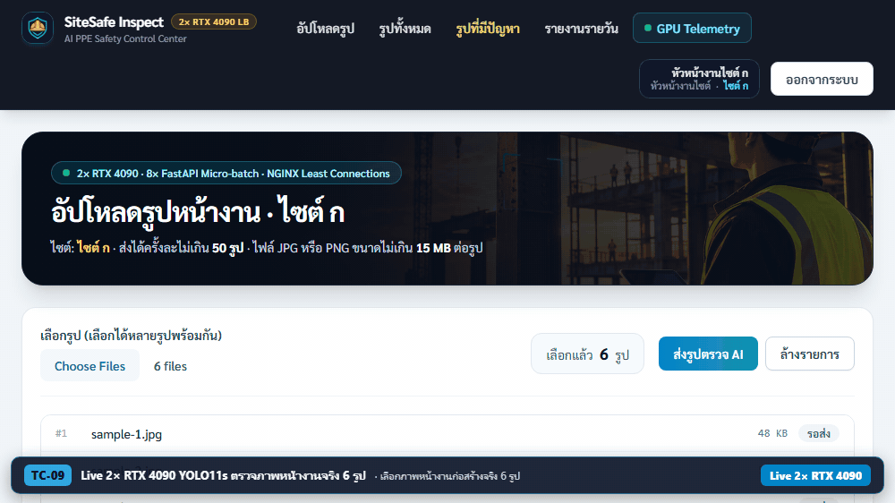
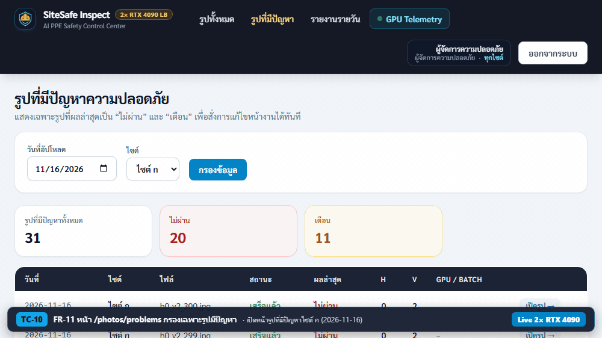
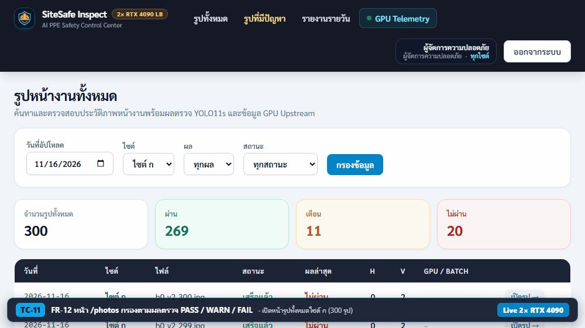
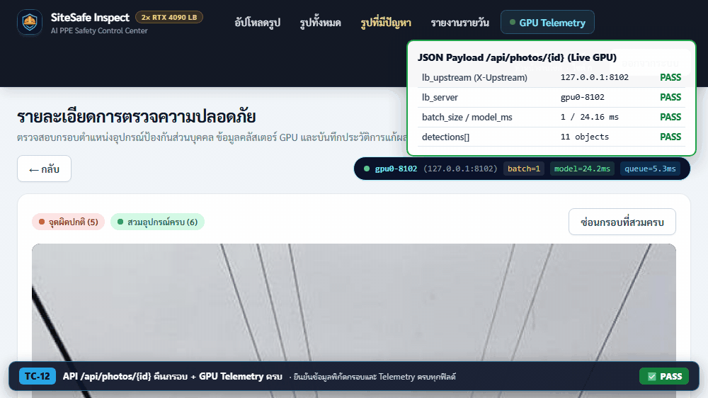

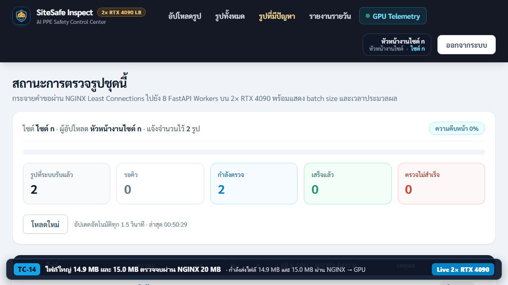

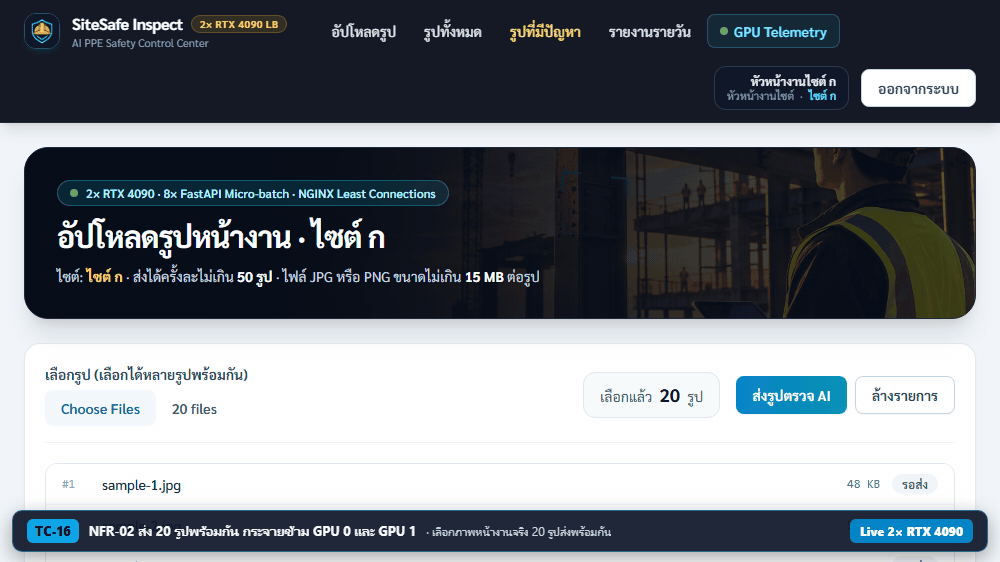
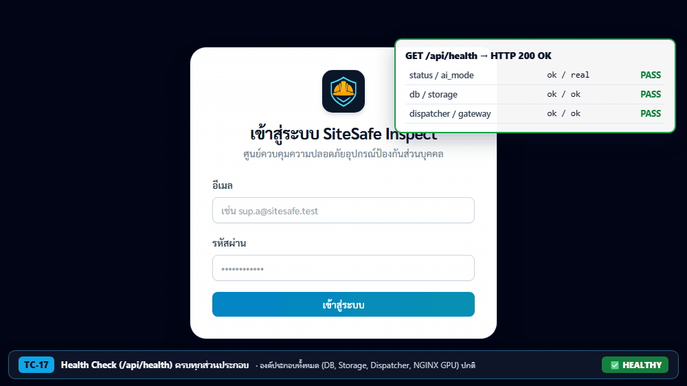


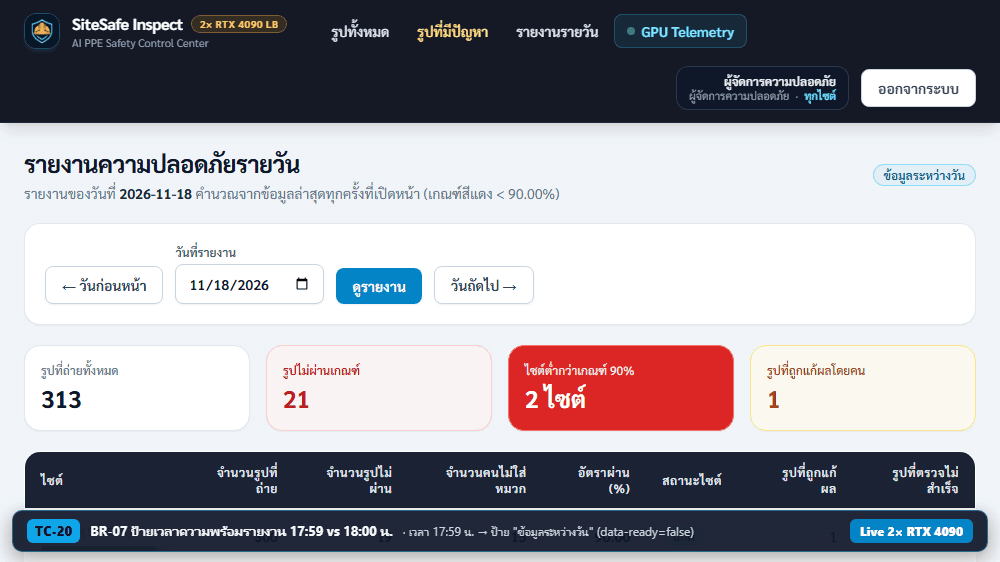
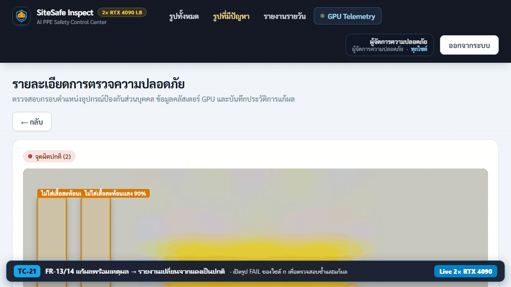


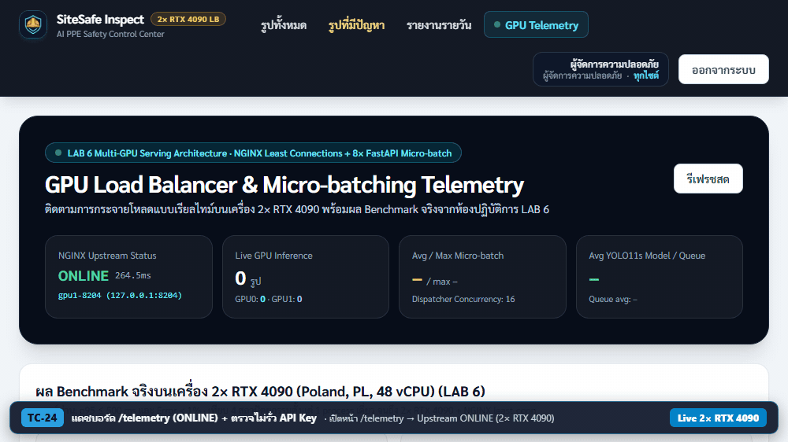

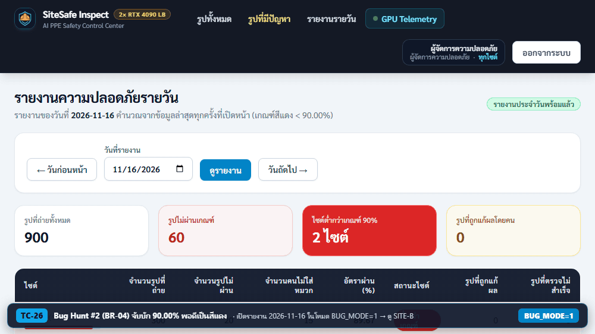